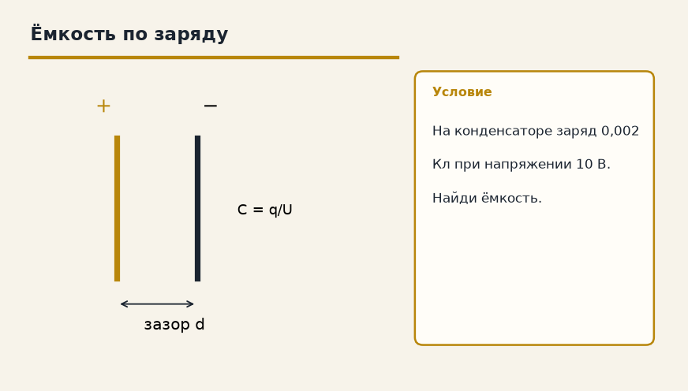

Тема «Конденсаторы»: физический смысл, единицы величин, типичные ошибки и два разобранных примера.

Схема к условию.
Физический смысл
Две пластины, разделенные диэлектриком. Способны накапливать заряд и энергию. Емкость показывает, сколько заряда может накопиться при данном напряжении.
Конденсатор — две пластины и между ними диэлектрик. На пластинах копятся равные по модулю разноименные заряды. Ёмкость C = q/U говорит, какой заряд приходится на один вольт. Геометрия плоского конденсатора: C = ε₀·ε·S / d, ε₀ = 8,85·10⁻¹² Ф/м. Больше площадь или диэлектрик с большим ε — больше ёмкость. Больше зазор d — меньше ёмкость.
Энергия запасённого поля W = CU²/2 = qU/2. Отключишь конденсатор от батареи — заряд q останется на пластинах. Оставишь подключённым — батарея держит напряжение U, а заряд может стечь или дотечь.
Ведро в аналогии: ёмкость — объём ведра, заряд — вода, напряжение — напор. Большое ведро при том же напоре принимает больше воды.
Формула и единицы
C = q / U
C = (ε₀ · ε · S) / d
W = (C · U²) / 2 = (q · U) / 2
ε₀ = 8.85 · 10⁻¹² Ф/м — электрическая постоянная, ε — диэлектрическая проницаемость, S — площадь пластин, d — расстояние между ними.
ε₀ = 8,85·10⁻¹² Ф/м, ε — диэлектрическая проницаемость, S — площадь пластин, d — зазор. W = CU²/2 = qU/2.
Пояснение
Ведро. Чем больше ведро (емкость), тем больше воды (заряда) можно налить при том же напоре (напряжении).
Ведро: чем оно больше, тем больше воды нальётся при том же напоре. Ёмкость — «объём», напряжение — напор, заряд — вода.
Типичные ошибки
Если отключить конденсатор от источника, заряд q сохраняется. Если оставить подключенным — сохраняется напряжение U.
Отключил от источника — сохраняется заряд q. Оставил подключённым — сохраняется напряжение U. Это разные режимы.
Схему к задаче нарисуйте сами. Решение открывается отдельно.
Разбор 1
По заряду
На конденсаторе заряд 0,004 Кл при напряжении 20 В. Найдите ёмкость.
Сначала данные, затем перевод в СИ, если он нужен, потом ход и ответ.
Дано. q = 0,004 Кл, U = 20 В
В СИ. Перевод не нужен: все величины уже заданы в СИ.
Найти. C
Решение.
C = q / U = 0,004 / 20 = 2·10⁻⁴ Ф = 200 мкФ.
200 мкФ.
Схема для сверки. Её рисуют до того, как открывают решение.
Разбор 2
Отключили батарею
Конденсатор зарядили и отключили от источника, затем пластины немного раздвинули. Какая величина остаётся прежней?
Сначала данные, затем перевод в СИ, если он нужен, потом ход и ответ.
Дано. цепь разомкнута
В СИ. Перевод не нужен: все величины уже заданы в СИ.
Найти. что сохраняется
Решение.
Заряду некуда стечь.
Сохраняется заряд.
Заряд.
Схема для сверки. Её рисуют до того, как открывают решение.
Разбор 3
Оставили на батарее
Конденсатор остаётся подключённым к батарее, пластины раздвигают. Что держит батарея постоянным?
Сначала данные, затем перевод в СИ, если он нужен, потом ход и ответ.
Дано. источник не отключён
В СИ. Перевод не нужен: все величины уже заданы в СИ.
Найти. постоянная величина
Решение.
Батарея поддерживает своё напряжение.
Напряжение.
Схема для сверки. Её рисуют до того, как открывают решение.
Разбор 4
Зазор
Площадь пластин и диэлектрик те же, расстояние между пластинами увеличили. Как изменилась ёмкость?
Сначала данные, затем перевод в СИ, если он нужен, потом ход и ответ.
Дано. d выросло
В СИ. Перевод не нужен: все величины уже заданы в СИ.
Найти. C
Решение.
C плоского конденсатора пропорциональна 1/d.
Ёмкость уменьшилась.
Уменьшилась.
Схема для сверки. Её рисуют до того, как открывают решение.
Разбор 5
Энергия
C = 200 мкФ, U = 10 В. Найдите энергию конденсатора.
Сначала данные, затем перевод в СИ, если он нужен, потом ход и ответ.
Дано. C = 200 мкФ, U = 10 В
В СИ.
200 мкФ = 2·10⁻⁴ Ф.
Найти. W
Решение.
W = C U² / 2 = 2·10⁻⁴ · 100 / 2 = 0,01 Дж.
0,01 Дж.
Схема для сверки. Её рисуют до того, как открывают решение.
Разбор 6
Заряд по ёмкости
C = 5 мкФ, U = 12 В. Найдите заряд.
Сначала данные, затем перевод в СИ, если он нужен, потом ход и ответ.
Дано. C = 5 мкФ, U = 12 В
В СИ.
5 мкФ = 5·10⁻⁶ Ф.
Найти. q
Решение.
q = C U = 5·10⁻⁶ · 12 = 6·10⁻⁵ Кл.
6·10⁻⁵ Кл.
Схема для сверки. Её рисуют до того, как открывают решение.
Разбор 7
Формула энергии
Какая из записей даёт энергию конденсатора через C и U?
Сначала данные, затем перевод в СИ, если он нужен, потом ход и ответ.
Дано. заряженный конденсатор
В СИ. Перевод не нужен: все величины уже заданы в СИ.
Найти. формула
Решение.
W = C U² / 2.
W = C U² / 2.
Схема для сверки. Её рисуют до того, как открывают решение.